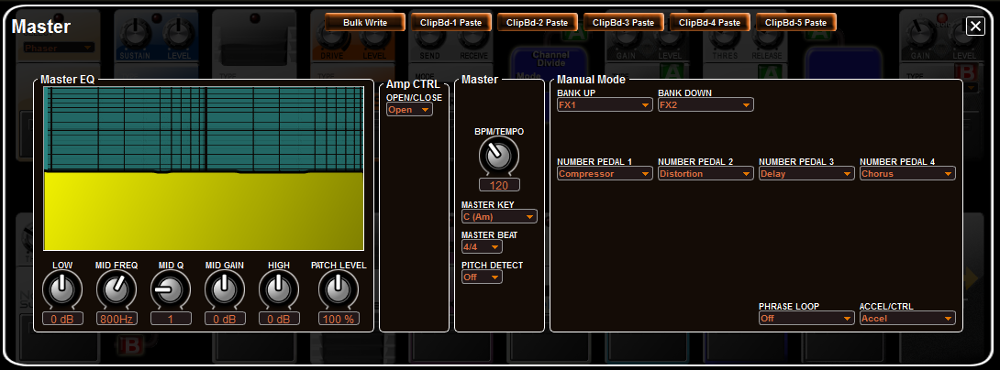

IndexEditing MASTER Settings
NOTE:
The following sections describe "PATCH level" parameters affecting the current KATANA patch. Also very important to know is that
any settings made in the SYSTEM configurations
will take precedence over conflicting patch level MASTER, Pedal and Assigns function settings.
NOTE:
When you make a change to MASTER parameters in the editor or in the
KATANA, changes are not saved automatically to the KATANA and must be written
to the current patch before they are in effect.
The MASTER editor panel allows you to edit the following functions:
- Patch Level - the overall volume of the patch, including COSM and PCM 1 and PCM2.
- Patch Tempo - specifies the tempo for tempo-synchronized effects.
If SYSTEM–MIDI/USB–GENERAL–MIDI SYNC (owner's manual p. 79) is “ON,” the tempo is determined by
MIDI clock from an external device. - Guitar
Out Jack - you can specify what signals (OFF/Normal PU/Modeling/Both)
are sent to the Guitar Output jack on the back of the KATANA.
- GK
SET Select - you can specify which GK settings (1-10) to use for the
selected patch. If you switch guitar or bass for different songs, you
can use a patch for each song that includes the right instrument
controller.
- Alternate Tuning - you
can select from popular alternate tunings and a user specified tuning.
Note that alternate tunings are not available in 12-string mode and
that the normal guitar pickup tunings are not affected.
- V-Link - you can control connected Roland V-Link equipment parameters.
You can access the above MASTER Settings by clicking the MASTER button at the top of the editor's main panel:

The MASTER panel opens. MASTER Settings
